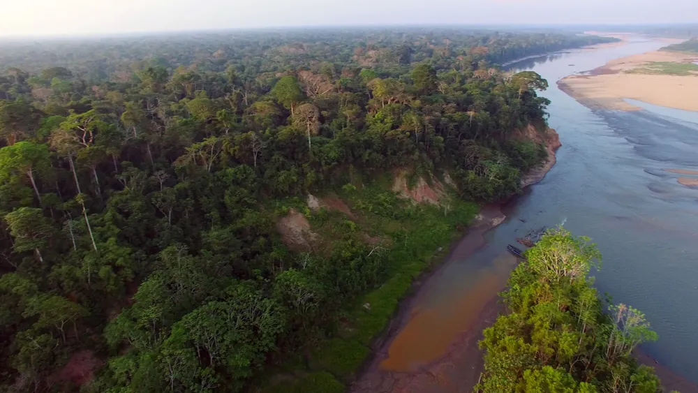
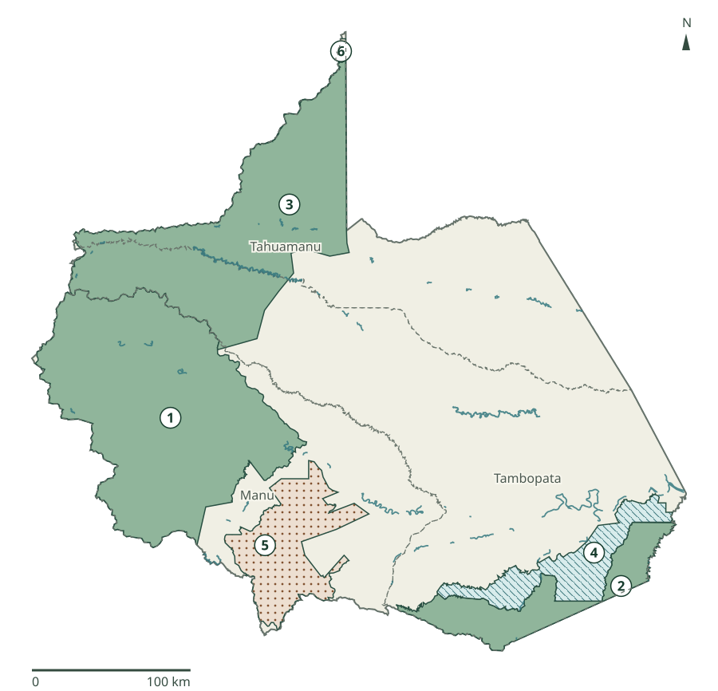
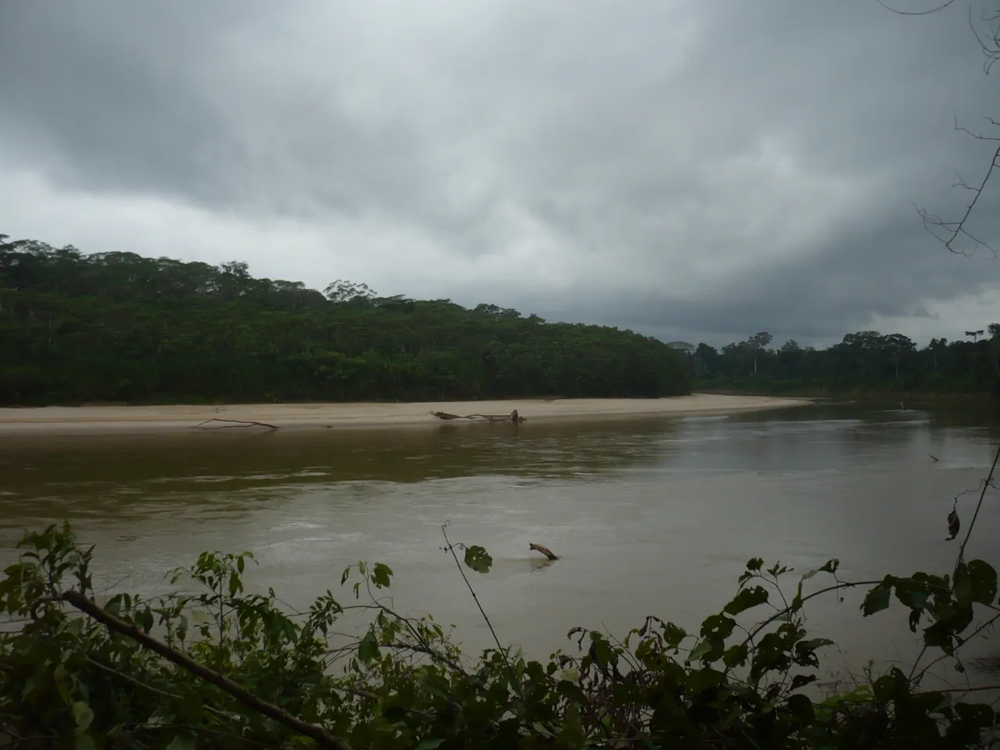

Manu
De la puna al bosque
El gradiente andino y amazónico reúne distintos ecosistemas y procesos ecológicos.
[7]Madre de Dios / Conservación
Territorios que ayudan a conservar bosques, ríos, biodiversidad y valores culturales de Madre de Dios.
Una forma de gestionar el territorio con objetivos, reglas y participación. Conocer sus diferencias ayuda a comprender qué se protege y cómo.
Explorar el mapa ↓
ANP nacionales con territorio en Madre de Dios
[1]Conservación privada con reconocimiento estatal
[4]Las seis superficies departamentales suman 3 849 456,00 ha y coinciden en los mapas de 2022 y 2025. El 45,35 % del mapa combinado de 2025 incluye ACP; aquí se distingue de la cobertura nacional. [3]
01 · Comprender la protección
Un área natural protegida es un espacio reconocido y gestionado para conservar valores naturales y culturales. No se reduce a un lugar donde viven animales.
Puede conservar ecosistemas, especies y diversidad genética; procesos ecológicos, paisajes y recursos naturales. También permite investigación y educación compatibles con sus objetivos.
Los usos permitidos dependen de la categoría, la normativa, la zonificación y los instrumentos de gestión de cada área. [6]
Conserva muestras de grandes unidades ecológicas. Es una categoría de uso indirecto: no permite extracción de recursos naturales; las actividades admitidas deben ser compatibles con sus objetivos.
Conserva diversidad biológica y permite aprovechamiento sostenible de determinados recursos, sujeto a planes y reglas. La autorización no se extiende a cualquier actividad ni zona.
Conserva flora y fauna en beneficio de comunidades vecinas. Su gestión vincula al Estado con representantes comunitarios y sus ejecutores de contrato de administración.
Se reconoce sobre parte o todo un predio, por iniciativa de su propietario. Se mantienen compromisos de conservación y actividades compatibles con el reconocimiento.
Definiciones: [5]. Las ACP se presentan por separado de las ANP de administración nacional.
02 · Explora las áreas protegidas
El mapa muestra solo las porciones dentro de Madre de Dios. Selecciona un contorno o un nombre para conocer el área; la ficha distingue ambas superficies.
6 áreas nacionales · selecciona un nombre

Arcilla: provincias. Azul: ríos. ANP: contorno sólido (PN), rayas (RN) y puntos (RC). Los números identifican áreas; no son puntos de ingreso.
Cartografía: [27] · [28] · [29]. Consulta UTC: 05/10/2026. Metadatos del mapa ↗
Mapa educativo simplificado, con límites departamentales de referencia. No sustituye documentos legales ni indica recorridos.
Abre una ficha para leer objetivos, ecosistemas, personas y evidencia específica sobre amenazas.
Superficies: total legal, listado SERNANP 18/08/2026; porción departamental, mapa 17/12/2025. Los valores no se calculan desde este mapa simplificado.
Parque Nacional
Un gradiente de vida entre los Andes y la Amazonía.
Diversidad biológica y paisajes desde ambientes andinos hasta bosques amazónicos.
Puna, bosque nublado, selva alta y selva baja.
La continuidad entre pisos ecológicos permite comprender ecosistemas muy distintos dentro de una misma área.
La ficha oficial documenta presencia Matsigenka y valores culturales. Los derechos y decisiones de los pueblos forman parte de la gestión.
Plan 2024–2029: riesgo de incendios forestales, incluida la propagación de quemas desde zonas vecinas. Es un diagnóstico de riesgo, no un reporte de daños de 2026. [19]
Parque Nacional
Las sabanas húmedas también son Amazonía.
Bosques y una muestra singular de sabanas húmedas tropicales: las Pampas del Heath.
Sabanas, bosques húmedos, cochas y pantanos.
El lobo de crin y el ciervo de los pantanos están documentados para estas sabanas; no se trasladan a las demás fichas.
La ficha reconoce valores culturales Ese Eja. Cultura registra participación Ese Eja y Harakbut en una consulta sobre zonificación en 2025.
Memoria SERNANP 2024: minería ilegal identificada en su zona de amortiguamiento. Esa evidencia no equivale a daño en todo el interior del parque. [20]
Parque Nacional
Un extenso bosque que cruza límites departamentales.
Bosque húmedo tropical, procesos ecológicos y especies de flora y fauna amenazadas.
Bosques tropicales, terrazas y paisajes de colinas.
Caoba y cedro figuran en la descripción oficial de su flora.
La protección de pueblos indígenas en aislamiento forma parte de sus objetivos. Su información espacial sensible no se muestra.
Mayo–junio 2026: guardaparques del área incluidos en capacitación contra tala y deforestación. La nota documenta prevención y vigilancia; no cuantifica daños dentro del parque. [23]
Reserva Nacional
Conservar y manejar recursos bajo reglas específicas.
Diversidad biológica de la selva sur y paisajes, junto con el manejo sostenible de recursos.
Bosques, ríos, cochas y collpas.
La castaña y el lobo de río son elementos documentados para esta reserva. Turismo y aprovechamiento requieren gestión compatible con su conservación.
La ficha oficial relaciona la reserva con poblaciones locales y actividades productivas sostenibles; no son usos libres en cualquier lugar.
Noviembre 2025: operativos ante minería ilegal en la reserva. Mayo 2026: refuerzo de vigilancia del área y su zona de amortiguamiento. No implica que la amenaza haya desaparecido. [22]
Reserva Comunal
Agua, bosques y participación en la conservación.
Bosques y cuencas que sostienen condiciones ecológicas y beneficios para comunidades relacionadas.
Terrazas, colinas y montañas; ambientes de selva alta y baja.
La conservación del agua forma parte de su objetivo, junto con flora como cedro y caoba.
Harakbut, Yine y Matsiguenka están documentados en la ficha y en la participación del Comité de Gestión 2026–2028.
Noviembre 2025: operativos contra minería ilegal en su zona de amortiguamiento. La fuente distingue esa zona del interior de la reserva. [21]
Reserva Comunal
Una reserva comunal compartida por dos departamentos.
Bosques y recursos naturales en beneficio de las comunidades locales, en relación con el Parque Nacional Alto Purús.
Bosques inundables y no inundables, terrazas y pacales de bambú.
La ficha documenta manejo comunitario de recursos, incluido el paiche.
Comunidades participan en la cogestión y vigilancia comunal; se describen funciones sin localizar asentamientos.
Mayo–junio 2026: guardaparques incluidos en capacitación contra tala y deforestación. La nota documenta vigilancia preventiva; no mide daños propios de esta reserva. [23]
03 · Naturaleza y personas
Los paisajes que se conservan cambian entre áreas. Bosques, ríos, cochas, collpas y sabanas no están presentes del mismo modo en todas ellas.
Manu
El gradiente andino y amazónico reúne distintos ecosistemas y procesos ecológicos.
[7]Bahuaja-Sonene
Las Pampas del Heath conservan sabanas húmedas tropicales, además de los bosques del parque.
[8]Tambopata
Las cochas, collpas y bosques castañeros forman parte de la diversidad descrita para la reserva.
[10]
Fotografías redimensionadas y convertidas a WebP; versiones bajo CC BY-SA 4.0. Son registros de las fechas indicadas.
Participación en el presente
La relación con la conservación se construye mediante decisiones, acuerdos y prácticas concretas. En 2025, Cultura registró participación Ese Eja y Harakbut en la consulta sobre una propuesta de zonificación de Bahuaja-Sonene. [25]
En Amarakaeri, SERNANP documentó en julio de 2026 participación Harakbut, Yine y Matsiguenka en el Comité de Gestión y en monitoreo e investigación intercultural. [24]
Alto Purús tiene entre sus objetivos la protección de pueblos indígenas en aislamiento. Respetar sus derechos incluye proteger su información espacial; este mapa no muestra sus ubicaciones ni recorridos. [9]
04 · Territorios conectados
Los ríos atraviesan límites administrativos y los procesos ecológicos relacionan bosques dentro y fuera de un área. La vida de las comunidades y las actividades productivas también forman parte de ese paisaje.
El uso del suelo, la infraestructura y las decisiones en zonas vecinas pueden afectar esas relaciones. Comprenderlas requiere mirar más allá de un contorno; el Plan Maestro del Manu incorpora esta perspectiva territorial. [19]
El esquema expresa relaciones educativas; no representa un corredor ecológico delimitado técnicamente.
Áreas de Conservación Privada
El reconocimiento estatal de un ACP vincula el predio con compromisos de conservación, por iniciativa de su propietario. Puede incluir iniciativas individuales, de organizaciones o de comunidades. [5]
35,40 ha · reconocimiento 2010.
Plazo perpetuo · R. M. 157-2010-MINAM.
140,3457 ha · reconocimiento 2021.
Plazo perpetuo · R. M. 245-2021-MINAM.
2 103,75 ha · reconocimiento 2021.
Hasta 31/12/2031 · R. M. 243-2021-MINAM. Comunidad Nativa Boca Pariamanu.
Ejemplos de Madre de Dios: [4]. Ver todas → Listado oficial nacional
No se publica un número de ACP vigentes: el listado incluye registros con plazos vencidos que requieren aclaración. Estos ejemplos sí tienen plazos documentados sin vencimiento a la fecha de revisión.
Tambopata · 2025–2026
Operativos en la reserva en noviembre de 2025 y refuerzo de vigilancia del área y su zona de amortiguamiento en mayo de 2026.
[21] · [22]Amarakaeri · 2025
Los operativos de noviembre se documentan en su zona de amortiguamiento. Esa ubicación se distingue del interior de la reserva.
[21]Manu · Plan 2024–2029
El plan identifica riesgos y contempla fortalecer capacidades de respuesta. El diagnóstico no equivale a un inventario de daños de 2026.
[19]Las fichas amplían la evidencia para cada área. Un diagnóstico de riesgo, una acción preventiva y un daño medido son datos distintos.
05 · Conservar
Cuatro de las seis ANP nacionales se extienden fuera de Madre de Dios. Manu, Bahuaja-Sonene, Alto Purús y Purús comparten departamentos. [1]
Alto Purús y Purús se establecieron con el mismo decreto, pero tienen categorías diferentes. Una es parque nacional; la otra, reserva comunal. [16]
Fechas de emisión de los instrumentos de creación. La ficha explica las fechas de publicación y las ampliaciones posteriores.
La extensión completa de un ANP y su porción departamental responden preguntas distintas.
Superficie dentro de Madre de Dios · hectáreas (ha)
| Área protegida | Total del ANP (ha) | Dentro de Madre de Dios (ha) |
|---|---|---|
| Parque Nacional del Manu | 1 716 295,22 | 1 578 763,60 |
| Parque Nacional Bahuaja-Sonene | 1 091 416,00 | 334 652,27 |
| Parque Nacional Alto Purús | 2 510 694,41 | 1 251 841,31 |
| Reserva Nacional Tambopata | 274 690,00 | 274 690,00 |
| Reserva Comunal Amarakaeri | 402 335,62 | 402 335,62 |
| Reserva Comunal Purús | 202 033,21 | 7 173,20 |
Conocer para conservar
Conocer Comprender Valorar Conservar
EcoSelva Madre de Dios · Educar para conservar.